Inovação
Metodologias ativas de aprendizagem, ferramentas digitais e os segredos da Nova Educação.
Da primeira conversa ao “seja bem-vindo”: as 10 etapas que conduzem o Secretário de Educação até a decisão — com a Sapion Magister no centro da solução.
Uma reunião de 40 a 53 minutos. A ordem importa: cada etapa prepara a próxima — e o relógio mostra onde investir o tempo.
Quebrar o gelo e criar conexão antes de qualquer pergunta.
Você dizOlá, eu me chamo [seu nome] e trabalho aqui na área comercial da Sapion. Como você está, Secretário?
Cite como chegou até a pessoa, mencione um ponto em comum ou algo pessoal para quebrar o gelo.
No agendamento, levante as demandas formativas da rede, notícias recentes, os índices educacionais do município e informações com terceiros. É munição para o rapport — e para fugir de uma reunião genérica e engessada.
Deixar claras duas intenções — e ganhar permissão para perguntar.
Como está a rede hoje e o que o Secretário precisa.
Que ele entenda nosso trabalho para ver se faz sentido ter a rede no nosso ecossistema.
Você dizEntão já quero setar 2 intenções aqui com você de forma clara: eu quero entender primeiro como está a sua rede hoje e também o que você precisa, mas também quero que você entenda nosso trabalho para ver se faz sentido ter vocês dentro do nosso ecossistema.
Pergunta de transiçãoMe fala um pouquinho da sua rede hoje: existe alguma demanda formativa específica que você já identificou?
“Combinado” — e siga de forma natural para o questionário.
Hoje, qual é o principal desafio que você sente que precisa avançar na rede?
Como vocês têm trabalhado esse desafio hoje?
Hoje vocês conseguem identificar com clareza quais são as principais necessidades de formação dos professores?
Quando essa necessidade de formação não é trabalhada, que impacto você percebe na rotina das escolas? E no trabalho dos professores e gestores?
Se esse cenário continuar como está, o que você acredita que pode acontecer com a rede nos próximos meses?
Como a Secretaria tem feito a formação continuada dos professores? Vocês conseguem fazer formação ininterrupta e para 100% das pessoas da rede?
Como está com o Ministério Público? Eles estão cobrando as formações? E o Tribunal de Contas?
Hoje, o que dificulta levar uma formação de qualidade para toda a rede?
Se você pudesse melhorar uma coisa hoje na formação dos professores, o que seria?
Se vocês conseguissem atender essas necessidades de forma mais prática e contínua, que impacto isso teria na rede?
Ligar o que ele contou ao objetivo dele e combinar as regras: no fim, ele diz sim ou não.
Qualquer resposta vale — “o prazer será o mesmo”.
Você dizSecretário, vendo tudo isso que você me passou, eu creio que a gente pode colaborar bastante nesse estágio em que você está. Hoje vou te mostrar os detalhes de como podemos [objetivo que ele citou]. Estou aqui para tirar todas as suas dúvidas e mostrar o que você precisa saber para decidir se é ou não uma oportunidade para você. Combinado?
E combine as regrasQuero que fique bem à vontade: se achar que a proposta não é pra você, pro seu momento — ou se achar que sim, que vai te ajudar a construir melhores resultados —, quero que me diga. O prazer será o mesmo. Posso contar com seu não ou com seu sim hoje, Secretário?
Aumentar o nível de consciência: formação continuada não é só pedagógica — é gestão, resultado e recurso.
Você dizQuando falamos em formação continuada, não estamos falando apenas de oferecer cursos aos professores — a Sapion é bem mais abrangente nesse sentido.
Leis educacionais estabelecem a responsabilidade de promover e garantir a formação e o aperfeiçoamento dos profissionais da educação.
Ministério Público, Tribunais de Contas e órgãos de controle cobram planejamento, aplicação correta dos recursos e políticas cumpridas.
O município recebe o Fundeb e pode acessar a complementação VAAR, que depende de condicionalidades e da evolução dos indicadores.
Deixar a formação continuada em segundo plano parece economia no curto prazo — e vira perda de oportunidades no médio e no longo prazo.
HojeA formação fica em segundo plano: parece economia
Em seguidaOs indicadores deixam de se fortalecer
DepoisCondicionalidades e metas ficam para trás
EntãoCai o potencial de atrair novos recursos, como o VAAR
AmanhãResultados e investimentos limitados
Avance para derrubar ›“Quanto custa oferecer formação?”
“Quanto pode custar para o município não investir de forma estruturada na formação dos seus profissionais?”
Mostrar por que a Sapion é a parceira certa: em vez de uma capacitação pontual, uma jornada contínua — com experiência, estrutura e resultados.
A Sapion acompanha o educador antes, durante e depois da formação e entra como parceira tecnológica da política de desenvolvimento profissional de toda a rede.
Formações, eventos e elaboração de documentos para municípios, estados e fundações — e um relacionamento estreito com os professores da educação básica.
de atuação no setor público, com municípios, estados e fundações.
e presença em dezenas de municípios brasileiros.
de aprovação e recomendação de quem utiliza a plataforma.
Também medimos o resultado pela evolução real dos índices dos municípios onde estamos.
Tudo o que desenvolvemos segue nossa metodologia própria, com estúdio e plataforma próprios — priorizando a qualidade e a entrega das formações.
Método próprio de produção de conteúdo, gerenciamento e engajamento.
Produção audiovisual de alta qualidade, com conteúdos exclusivos.
Tecnologia robusta e escalável: web e aplicativo.
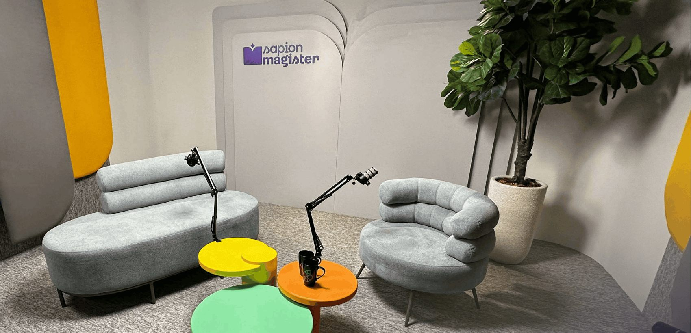
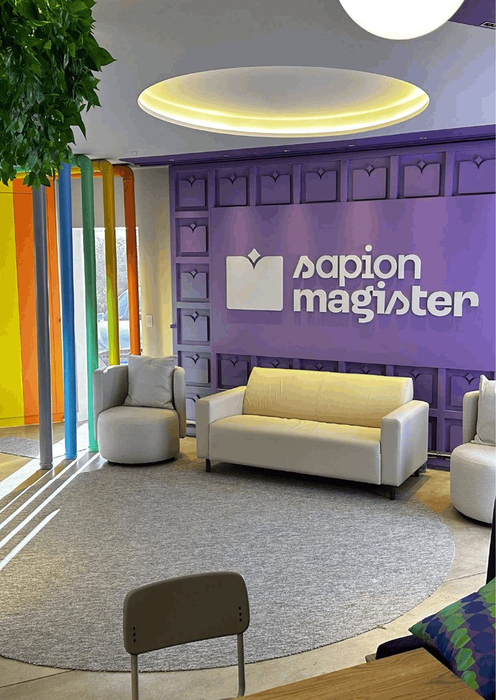
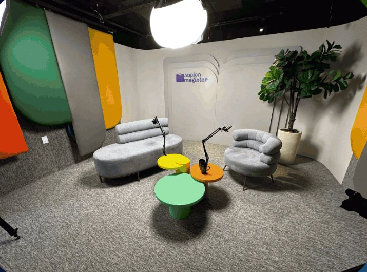
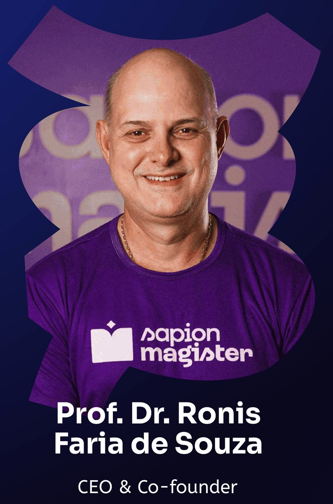
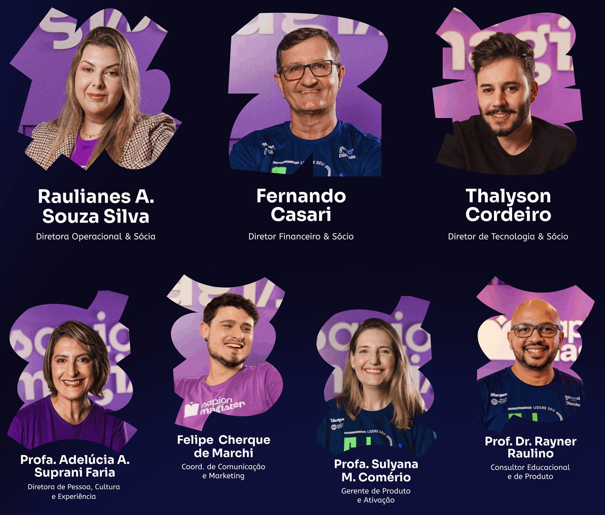
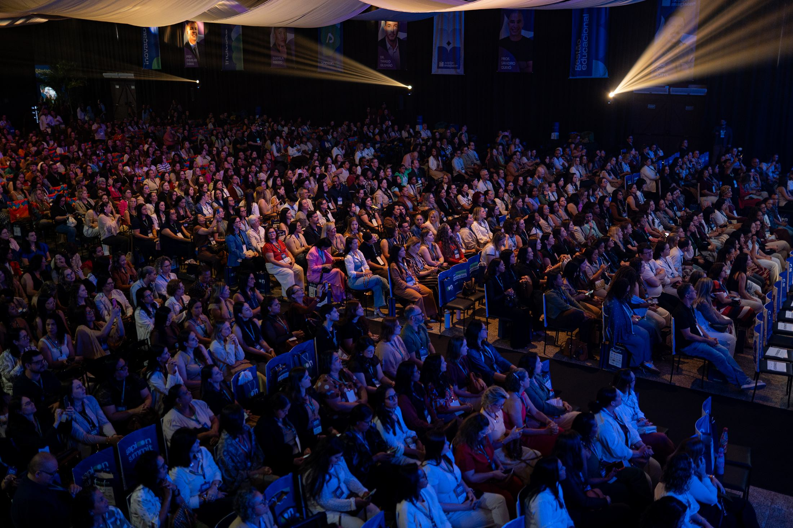
Reúne secretários, gestores, diretores, coordenadores, professores e especialistas comprometidos com uma educação pública cada vez mais forte: inspiração, troca de conhecimento e conexão entre lideranças de todo o estado.
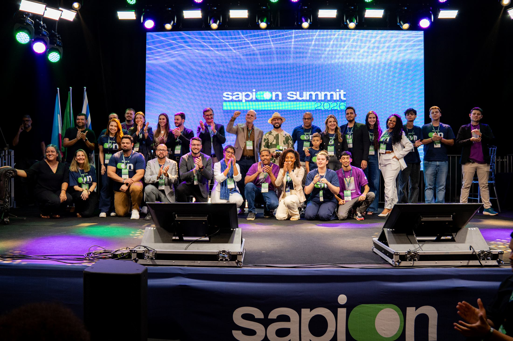
participantes em 2025
palestrantes de relevância nacional
cobertura em TV aberta e portal digital
Três clientes Sapion em destaque. Marilândia e Águia Branca dividem o pódio estadual nos anos iniciais do Ensino Fundamental.
Mostrar, na prática, como a Sapion Magister resolve a formação continuada da rede — do diagnóstico ao dado.
Apresente a plataforma ao vivo ou siga por estes slides. Mostre um curso dentro de uma das trilhas.
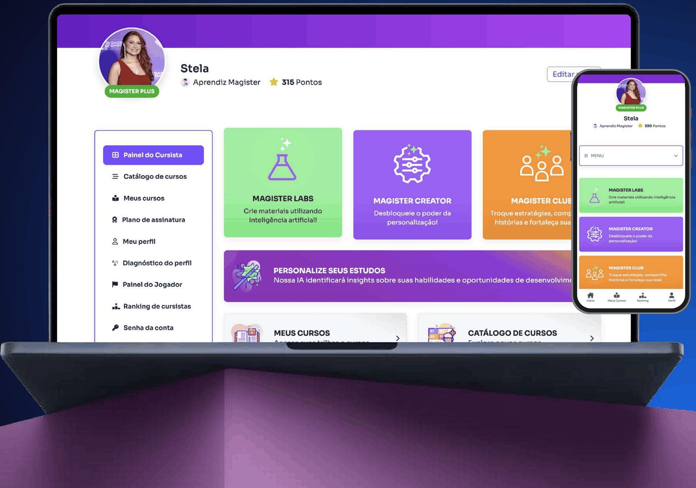
Metodologias ativas de aprendizagem, ferramentas digitais e os segredos da Nova Educação.
O universo da criança em seus primeiros ciclos de aprendizagem.
Competências técnicas e emocionais para brilhar na Nova Educação.
Preparo para a educação especial e inclusiva.
Liderança e gestão emocional para chegar ao próximo nível.
Demanda específica? Entra em linha de produção — se ainda não estiver na nossa base, em pouco tempo o curso fica disponível para a rede.
Acompanhamento junto à gestão: seguimos com a Secretaria a evolução dos professores ao longo de toda a jornada.
Com base nela, acompanhamos a jornada e a evolução dos cursistas: mais efetividade na formação e resultados mais consistentes para a rede.
As preferências e os desafios de cada professor.
A gestão monta a trilha do município; o professor cria cursos com IA.
Soluções para problemas reais da sala de aula, hands-on e em sequência lógica.
Comunidade ativa, gamificação, assistente de IA e Sapion Summit.
Dashboard com inúmeras métricas para embasar as decisões.
Dentro de cada trilha, cursos ligados ao que cada rede precisa. Ao escolher um curso, o professor vê toda a composição:
Conteúdos que vão do conceito à aplicação prática.
Um consultor seleciona materiais importantes da internet, complementares ao conteúdo do curso.
Sugestão de leitura, artigo ou literatura sobre o tema.
Uma ferramenta prática para o professor sair dali direto para a sala de aula.
Recursos que tornam a experiência mais completa, prática e engajadora — mostre cada um à medida que for falando.
Pontos, ranking e recompensas: formação dinâmica e divertida.
Ferramentas de IA que otimizam o dia a dia do professor.
O professor monta o próprio curso — ou deixa a IA montar.
Comunidade exclusiva e colaborativa de professores.
A plataforma é toda gamificada: os professores acumulam pontos, participam de uma competição saudável, acompanham a evolução no ranking e recebem recompensas.
Isso estimula o engajamento e torna a formação mais dinâmica e divertida.
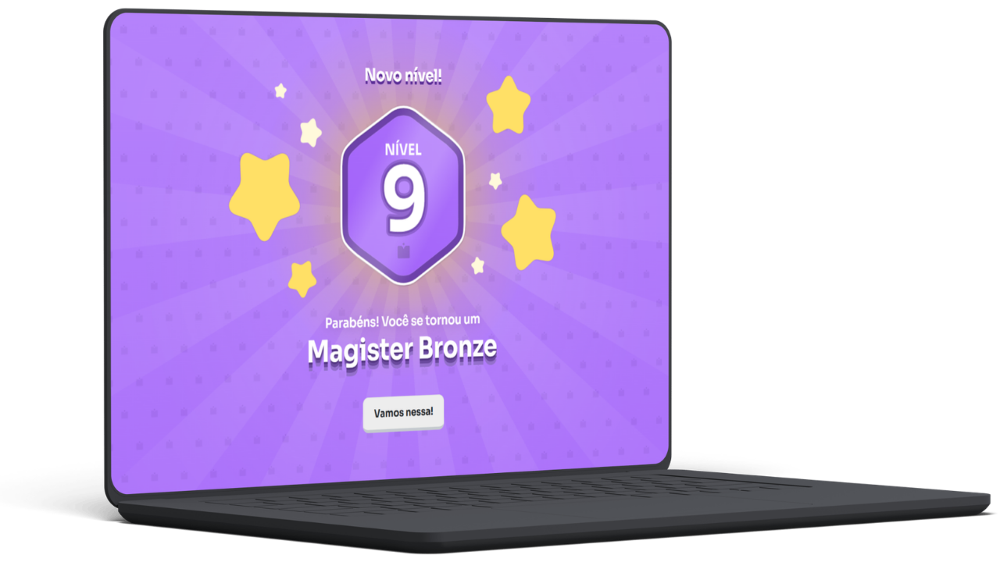
Ferramentas avançadas de IA para apoiar o professor no dia a dia. Ele lança as informações e recebe um material que só precisa revisar — e ganha tempo para o resto da vida.
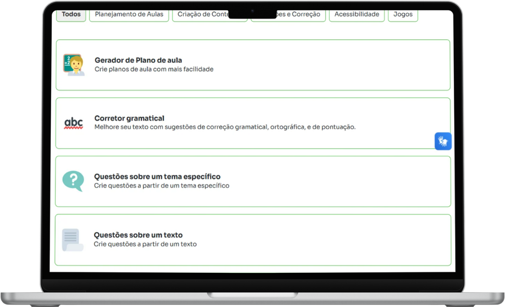
O professor monta o próprio curso — ou deixa a IA montar. Um diagnóstico de perfil em 5 dimensões revela fragilidades e gaps, e o algoritmo sugere e gera os cursos certos.
O município não precisa escolher entre escala e personalização: a política formativa é comum, e cada profissional percorre a trilha de que precisa.
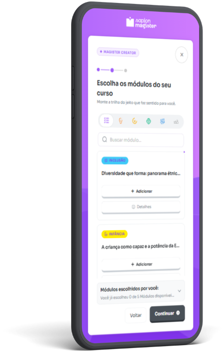
Comunidade exclusiva e colaborativa de professores: feed dinâmico, fóruns, notícias, podcasts e videodicas. O professor não fica sozinho diante da tecnologia — aprende, pergunta e compartilha com seus pares.
A gestão acompanha, em tempo real, como a rede usa a plataforma — e decide com mais segurança.
Cursos montados pelos próprios professores têm engajamento maior: eles conhecem as próprias dores.
Três perguntas para confirmar a confiança na Sapion — antes de falar em valores. Avance para marcar cada “sim”.
Pra vocês fazerem um investimento, seja do tipo que for, o tamanho e a credibilidade da empresa fazem diferença?
Você se sente seguro com a experiência e a força que a Sapion possui?
Você consegue visualizar a Sapion como parceira tecnológica na política de desenvolvimento profissional da sua rede?
Uma solução para formação, outra para apoiar a prática, outra para produtividade e outra para os dados da rede. Quanto isso custaria — e quanto custaria para a gestão administrar tudo isso?
A Sapion parte de outra lógica: integrar essas frentes em uma única jornada de formação continuada, pensada para profissionais da educação básica.
Pacto finalPerfeito, Secretário: você disse que gostou, que faz sentido para você e que a nota para a necessidade hoje é 10. Tirando a parte dos valores — digamos que exista um preço justo e uma forma de pagamento viável com a sua realidade de hoje —, posso te considerar um novo cliente aqui da Sapion?
Tudo o que você apresentou funciona por meio de uma licença de uso da plataforma — individual: cada profissional da rede tem a sua, com acesso a toda a estrutura por 12 meses.
Ao final do período, a proposta é renovar. Formação continuada não é ação pontual: quanto mais tempo o professor fica na jornada, mais acompanhamos sua evolução e geramos impacto consistente.
Chegou o Dia dos Professores e a Secretaria quer um momento especial para a rede? O seminário pode entrar na contratação, com toda a estrutura:
Parceria contínua, personalizada e escalável: a cada ciclo, a formação acompanha o momento da rede e os objetivos da Secretaria.
por licença · 12 meses de acesso
por mês: menos de R$ 100 por professor
Uma precificação construída com bastante pesquisa de mercado, considerando a singularidade e a amplitude da solução.
Secretário, por toda essa estrutura, vale?
Depende da realidade e do processo de cada município. “Em qual formato ficaria melhor pra você?” — e ouça as objeções.
Solução proprietária, com certidão de exclusividade (Assespro) e registro no INPI.
Participação em editais aderentes ao escopo da solução.
Caminho que acelera o fechamento.
Professores, pedagogos e diretores × R$ 1.188 (valor médio por licença). Digite o número que o Secretário informou.
Iniciamos a contratação agora, sem deixar a decisão para depois.
Faturamento conforme o planejamento financeiro da Secretaria.
A rede começa o ano com a formação continuada já estruturada.
Você dizSecretário, se a questão for a disponibilidade imediata de recursos, isso também pode ser planejado. Podemos iniciar o processo administrativo ainda este ano e alinhar o faturamento para o próximo exercício. O importante é antecipar o processo, para que a rede já comece o próximo ano com a formação estruturada.
O município não está comprando horas de treinamento: está investindo no desenvolvimento dos seus profissionais e no capital humano da rede.
Cada curso realizado, cada interação na comunidade e cada uso do assistente constroem conhecimento dentro da própria rede municipal.
Garanta que ele entendeu o argumento, peça a decisão e conduza os próximos passos — a Secretaria não faz isso sozinha.
“Esses são os valores e as condições que temos hoje. É com base neles que eu gostaria de ter o seu sim ou não — e eu preservo essas condições para a sua rede durante o processo.”
“Você destaca uma pessoa da Secretaria para conduzir o processo internamente, e nossa equipe dá todo o suporte com a documentação e as orientações. Já tem alguém em mente?”
“Vou encaminhar por e-mail o orçamento formal e os demais documentos de contratação, e conversamos sobre os próximos encaminhamentos.”
“Parabéns pela decisão e seja muito bem-vindo ao nosso ecossistema! Juntos, vamos fortalecer a política de desenvolvimento profissional da sua rede.”
O script conduz a conversa. A preparação e a postura fazem o fechamento.
No agendamento, levante demandas formativas, notícias, índices educacionais e informações com terceiros. Evite reuniões genéricas.
Vestimenta, cabelo, pele e acessórios bem pensados para causar ótima impressão na chamada.
Tom firme, variação de voz, pausas para falar e nenhum vício de linguagem.
Nunca interrompa. Deixe o cliente falar e dê 1 segundo de silêncio depois que ele terminar.
Antes de cair o produto, mostre onde o desejo dele é atendido ou a dor é resolvida — com as informações que ele mesmo deu.
Quando for preciso, converse sobre outros assuntos para diminuir a tensão.
Trabalhe a reunião em um produto acima do que vai vender: criar o problema, dar a solução e fechar.
Compartilhe a tela, mostre clientes, conte histórias de terceiros e os bastidores: clareza do futuro gera conforto.
Se o Secretário quiser adiar a decisão, estabeleça dia e horário para retomarem a conversa.
Vamos juntos?